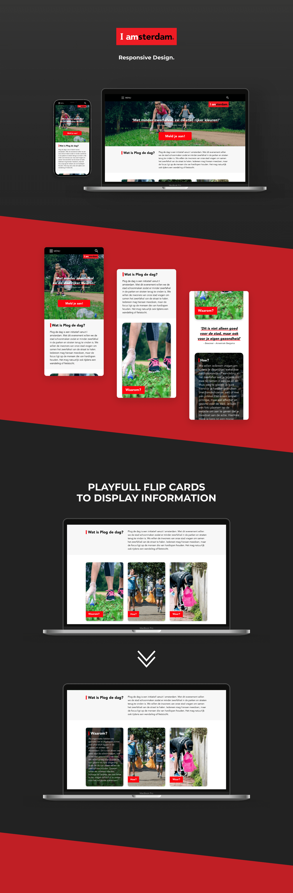

Plog de dag is a campain for I Amsterdam. This campain focusses on people who work out in the outdoors, and how they all can contribute to a cleaner city, picking up gabage as they are going on a run or just walking around the park. I designed an informative part of the website where users can read about the importance of this project, and try to motivate them through design with quotes and activation on social media. I tried to make the design playful with the use of flipcards that will display the information when you hover over the cards, it will make the website dynamic and could trigger users to look further in to the website because of the fun interactions.
